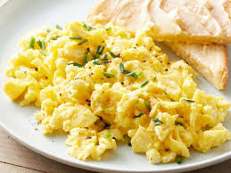

Scrambled Eggs
Home

Description
Scrambled eggs are a quick and easy dish made by whisking eggs and gently cooking them in a pan until soft and fluffy. They are a popular breakfast option around the world and can be customized with various seasonings, cheese, or vegetables. Perfect for a fast, nutritious meal any time of day!
Ingredients
- 2–3 eggs
- A pinch of salt
- A pinch of black pepper (optional)
- 1 tablespoon of milk (optional, for fluffier eggs)
- 1 teaspoon of butter or oil
Steps
- Crack the eggs into a bowl and whisk with a fork. Add a pinch of salt, pepper, and milk (if using).
- Heat a non-stick pan over medium heat and add butter or oil.
- Pour in the egg mixture and let it sit for a few seconds.
- Gently stir with a spatula, pushing eggs from the edges to the center as they cook.
- Cook until soft and fluffy, then remove from heat.
- Serve warm, with toast or your favorite side!